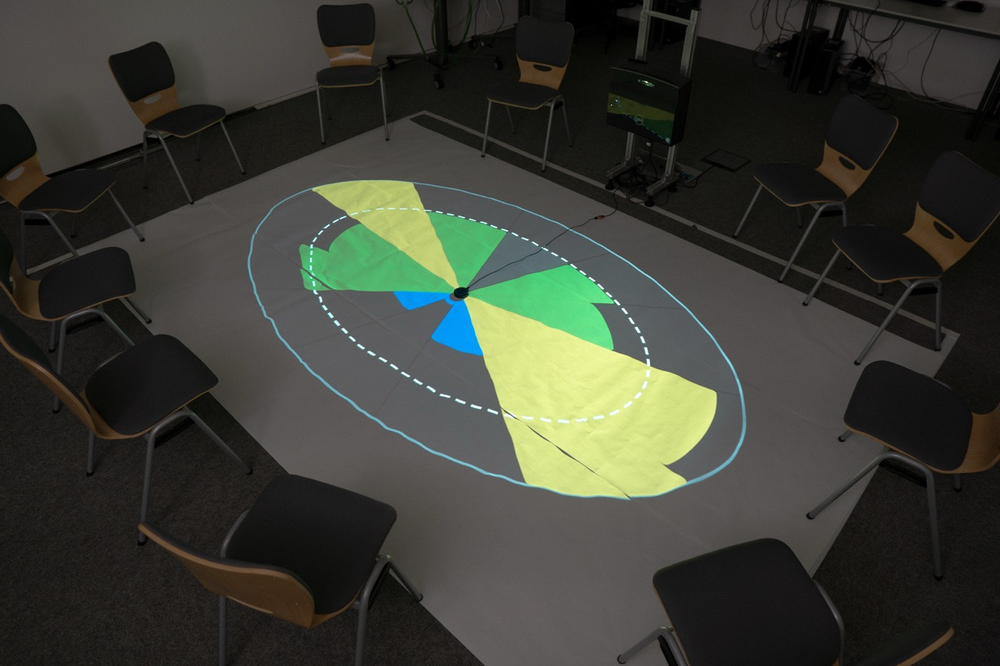
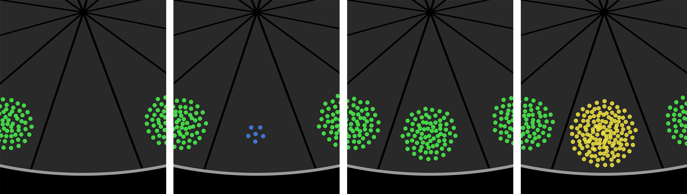
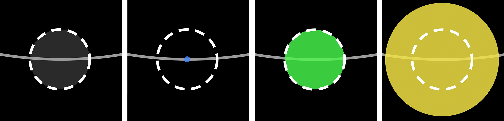
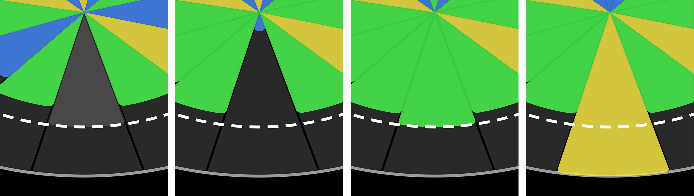

Iterative Development of visualisations for a floor-projected verpal participation feedback system in the context of group therapy
Winter 2025/2026
Meine Masterarbeit im Fach Medieninformatik beschäftigte sich mit der Entwicklung und Evaluierung verschiedener Visualisierungsformen von Redeanteilen. Diese Visualisierung wurden speziell für die Anforderung von Gruppentherapien entwickelt: Bis zu 12 Teilnehmende treffen sich in einem Sitzkreis, abstrakte Visualisierungen verhindern das Auslösen von Traumata; eine technisch simple und wenig störende Umsetzung ist robuster und einfacher für den Endnutzer.
Die Arbeit entstand in Zusammenarbeit des Lehrstuhls Medieninformatik der Universität Regensburg mit dem Lehrstuhl für klinische Psychologie an der Privaten Fachhochschule Göttingen.
Mitarbeitende der PFH waren als Stakeholder im Designprozess beteiligt und später bin ich nach Göttingen gereist, um dort mit einer Psychologin und Studierenden eine meiner zwei Studien durchzuführen.
Technische Umsetzung
In einem Python-Backend wird mithilfe eines kommerziell verfügbaren omnidirektionalen Array von vier Mikrofonen wird die Direction of Arrival (DOA) eines Signals (= einer Sprecher:in) als Gradzahl ausgelesen. Das fungiert als simple Basis für die Redeanteilsmessung, nachdem die Methode in einer technischen Vorstudie mit ausreichend hoher Genauigkeit validiert wurde.
Ein Flask-Server läuft in einem separaten Thread des Python-Skripts. Hier wird das Front-End gehostet und Requests verarbeitet.
Das Front-End ist eine Webapp mit D3.js-Canvas, auf dem die Visualisierungen gezeichnet werden. Diese wird in die Mitte des Sitzkreises mit einem Short-Throw-Projektor auf dem Boden angezeigt. In der Mitte der Projektion wird das Mikrofon positioniert.
Zu Beginn einer Session werden die Sitzpositionen der Teilnehmenden im Front-End markiert. Dann wird der Reihe nach (z.B. durch eine Vorstellungsrunde) für jede Person eine Audio-Position erfasst. Dieser Wert wird daraufhin verwendet, um ankommende Signale einer Redner:in zuzuweisen. Sobald eine Person einen Satz beendet hat, werden in einer Liste im Backend die Sprechzeiten aktualisiert, die das Front-End kontinuierlich abfragt und entsprechend die Visualisierung zeichnet.
Front-End-Screenshots. Links: Markierung der Sitzposition, Rechts: Beispielhafte Verteilung von 12 Teilnehmenden.
Die Verteilung der Teilnehmenden (links) ist flexibel, was Anzahl und exakte Position der Personen angeht.
Im Anlegen-Modus wird ein eigens angefertigter großer Cursor sichtbar und eine orange Markierung, die nur am Rand des möglichen Kreises entlang läuft, zeigt die spätere Position der Visualisierungen. Diese sollte idealerweise zwischen den Füßen der Teilnehmenden gesetzt werden.
Im Wartezustand (rechts) wird dann per Klick auf eine Personenmarkierung der Mikrofon-Kalibrierungs-Zeitraum gestartet, in welchem Input gemessen und die häufigste Position als Standort der Person im Back-End hinterlegt wird.
Die Toolbar am unteren Rand des Displays ist das ausblendbare Steuer-Interface des Front-Ends. Von links nach rechts sind in der Toolbar (alle Felder ausgeklappt): Kompletter Reset aller Personen, Debug-Zeitsetzung, Toggle für Mikrofonposition (falls verrutscht), Auswahl der Visualisierung, Toggle für den Personen-Markieren-Modus, Toggle für Debug-Text (Tatsächliche Rededauer neben Position), Toggle zum Ausschließen der Moderator:in und Session starten. Hier kamen Icons von Phosphor Icons und das Font Face Inter zum Einsatz.
Visualisierungen
Demonstration der Slices-Visualisierung. Redeanteile werden inmitten eines Sitzkreises auf den Boden projiziert.
Verschiedene Zustände der Partikel-, Kreis- und Slices-Visualisierungen. Von links nach rechts wird eine deaktivierte Person und die Redeanteile 10%, 100% und 190% dargestellt.
Die Partikel werden anfangs aus der Mitte heraus verteilt und dann zwischen Personen hin- und herbewegt. Sie bieten eine starke, klare Metapher für die Ressource Redezeit, die eindeutig zählbar und damit leicht verständlich ist.
Die Kreise wachsen oder schrumpfen im Radius abhängig von der Redezeit einer Person. Der weiß gestrichelte Ring zeigt die ideale Beteiligung (100%) an.
Die Slices wachsen von der Mitte heraus auf die Nutzer:in zu. Die weiß gestrichelte Linie spiegelt den Idealwert wieder, der für die ganze Gruppe einen zusammenhängenden Kreis darstellen würde und so ein besseres Gemeinschaftsgefühl herbeiführen sollte.
Ergebnisse
Die drei Visualisierungen und eine nicht-visualisierte Bedingung wurden in zwei Studien evaluiert. Eine lose Fokusgruppe mit Informatik-Studierenden brachte Design-Erkenntnisse und eine anwendungsnahe Therapiesimulation, geleitet von einer Psychologin, nach der die leitende Expertin ihre Einschätzung gab.
Balancing Index nach Gini über den Verlauf der moderierten Therapiesimulation. Für jeden Moment jeder Runde wird die Summe der Abweichungen von der Idealverteilung aller Redenden gebildet und dann normalisiert.
Je höher der Wert, desto stärker die Divergenz vom Ideal. Ein Gini Index gleich 0 bedeutet, dass jede Person genau 1/n spricht.
Im Graphen ist erkennbar, dass zumindest in diesem sehr kleinen Sample die Runde ohne Visualisierung (Blank) am weitesten von einer Idealverteilung entfernt war, während die drei visualisierten Runden alle etwas ausgeglichener sind.
Die Expertin, die nach der Studie interviewt wurde, hat nach eigener Einschätzung stark vom System profitiert, weil es ihr die mentale Last der Redeanteilszählung abnahm und sie sich besser auf die Inhalte der simulierten Therapiesitzung konzentrieren konnte. In ihrem Feedback und auch in der Fokusgruppe schnnitt die Partikel-Visualisierung am besten ab, dicht gefolgt von den Kreisen.
Insgesamt deuten die Ergebnisse der Studien auf ein hohes Potenzial eines Group-Mirror-Systems für Gruppentherapien hin, das allerdings noch in längeren, umfangreicheren Studien erforscht werden muss, bevor mirrorlevel oder eine Weiterentwicklung davon real eingesetzt werden kann.
Die Arbeit wird aktuell begutachtet und die Endnote an dieser Stelle nachgereicht.
In der Zusammenarbeit zwischen den Lehrstühlen der Universität Regensburg und der PFH Göttingen wird weiter an interdisziplinären Anwendungen aus der Informatik für die Psychologie geforscht und dabei auf dieser Arbeit aufgebaut werden. Eine verkürzte Fassung der Masterarbeit wird zukünftig in relevanten Konferenzen eingereicht; damit einhergehend plane ich die Veröffentlichung von mirrorlevel als Open-Source-Tool.